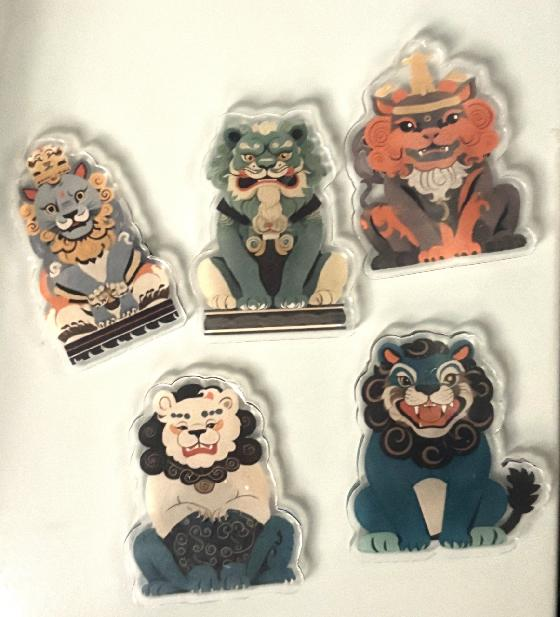

卢沟桥宛平城地区简介
卢沟桥宛平城地区位于北京市丰台区，是一处具有重要历史意义的地方。宛平城始建于明崇祯十一年，曾名 “拱北城”“拱极城”，是华北地区唯一保存完整的两开门卫城。它与卢沟桥紧密相连，卢沟桥是华北地区现 存最古老最长的一座十一孔联拱石桥，桥身雕刻着精美的石狮，“卢沟晓月”更是著名的燕京八景之一。
1937年7月7日，日军在此发动“七七事变”，宛平城的城墙至今还保留着当年日军炮击的弹痕，这里成为了中 国人民抗日自卫战争的起点。
如今，该地区建有中国人民抗日战争纪念馆和中国人民抗日战争纪念雕塑园，是重要的爱国主义教育基地和 红色旅游胜地，每年吸引着大量游客前来缅怀历史、铭记先烈。
项目背景
随着经济全球化趋势和现代化进程的加快，我国的文化生态正在发生巨大变化，文化遗产及其生存环境受到严重威胁。 不少历史文化名城、古建筑、古遗迹及风景名胜区整体风貌遭到破坏。由于过度开发和不合理利用，许多重要的文化遗产 消亡或被人们淡忘。文化遗产是不可再生的珍贵资源。如何解决文化遗产消亡和文化遗产被人们淡忘的问题，成为了一个 重要的研究课题。
文创周边
-

卡通版石狮冰箱贴(自创)
-
醒狮款金箔画(自创)
-
红色狮子款剪纸(自创)
-

雄狮香炉（官方文创）
-
抗日战争纪念馆主题文创书签(自创)
-
香薰挂片（官方文创）